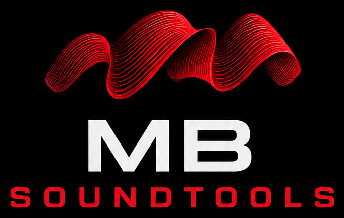

Elige tu mesa. Con «Demo» puedes probarlo todo sin mesa.
La IP la ves en la WING: Setup → Network. O pulsa «Buscar mesa».
Para usarlo en el iPad: conecta el iPad al mismo Wi-Fi que este ordenador y abre en Safari—
Después, en Safari: Compartir → «Añadir a pantalla de inicio» para abrirlo a pantalla completa como una app.
Guarda cómo está todo ahora (volúmenes, mutes, ecualizadores, envíos, nombres…) para recuperarlo con un toque, por ejemplo una por canción o por bolo.
Principal: lo que suena por el PA. Un bus: la mezcla de un monitor o unos cascos; los faders pasan a controlar cuánto de cada canal le llega a ese músico.
Toca los canales que quieres tener juntos, en el orden en que quieres verlos. Vuelve a tocar para quitarlos.